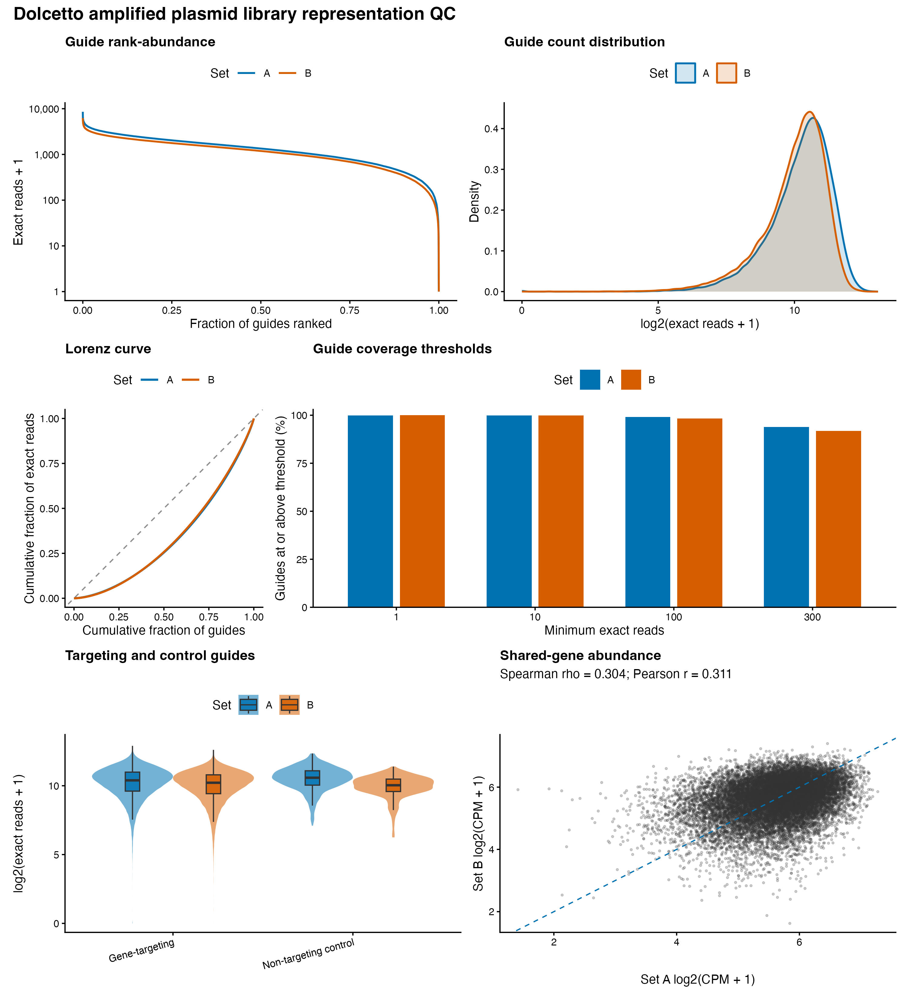
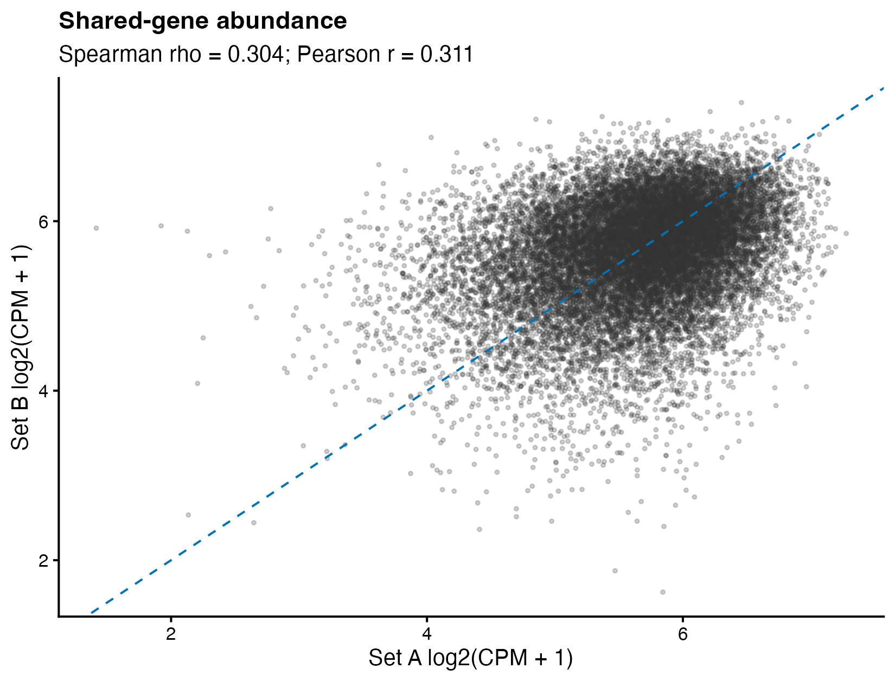

Generated 2026-07-29 15:05 EDT
| Set | R1 reads | Exact mapped (%) | Mean reads/guide | Median reads/guide | Zero guides (%) | 90th/10th ratio | Raw Gini | Log-count Gini |
|---|---|---|---|---|---|---|---|---|
| A | 107,224,370 | 79.67 | 1,497 | 1,344 | 23 (0.040%) | 6.74 | 0.346 | 0.060 |
| B | 90,677,568 | 81.18 | 1,291 | 1,188 | 2 (0.004%) | 6.81 | 0.340 | 0.062 |
Thresholds are used as transparent flags rather than a single hard pass/fail verdict.
| Set | Metric | Observed | Default threshold | Status |
|---|---|---|---|---|
| A | Exact mapping (%) | 79.67 | >= 65 | PASS |
| B | Exact mapping (%) | 81.18 | >= 65 | PASS |
| A | Mean reads per guide | 1497.305 | >= 300 | PASS |
| B | Mean reads per guide | 1291.129 | >= 300 | PASS |
| A | Zero-count guides (%) | 0.04 | <= 1 | PASS |
| B | Zero-count guides (%) | 0.00 | <= 1 | PASS |
| A | Gini of log2(count+1) | 0.060 | <= 0.1 | PASS |
| B | Gini of log2(count+1) | 0.062 | <= 0.1 | PASS |

| Set | Category | Reads | Percent of R1 |
|---|---|---|---|
| A | total_reads | 107,224,370 | 100.000 |
| A | no_CACCG_prefix | 2,080,960 | 1.941 |
| A | valid_20nt_insert | 97,542,387 | 90.970 |
| A | invalid_base_20nt_insert | 291,700 | 0.272 |
| A | non20_insert_with_GTTT | 5,744,885 | 5.358 |
| A | no_downstream_GTTT | 1,564,438 | 1.459 |
| A | exact_reference | 85,421,253 | 79.666 |
| A | nonreference_20nt | 12,121,134 | 11.304 |
| A | one_mismatch_unique | 6,251,495 | 5.830 |
| A | one_mismatch_ambiguous | 5,988 | 0.006 |
| A | more_than_one_mismatch_or_other | 5,863,651 | 5.469 |
| B | total_reads | 90,677,568 | 100.000 |
| B | no_CACCG_prefix | 1,341,051 | 1.479 |
| B | valid_20nt_insert | 83,071,262 | 91.612 |
| B | invalid_base_20nt_insert | 239,515 | 0.264 |
| B | non20_insert_with_GTTT | 4,712,856 | 5.197 |
| B | no_downstream_GTTT | 1,312,884 | 1.448 |
| B | exact_reference | 73,608,533 | 81.176 |
| B | nonreference_20nt | 9,462,729 | 10.436 |
| B | one_mismatch_unique | 5,465,331 | 6.027 |
| B | one_mismatch_ambiguous | 3,188 | 0.004 |
| B | more_than_one_mismatch_or_other | 3,994,210 | 4.405 |
Across 18,857 shared annotated genes, Spearman rho = 0.304 and Pearson r = 0.311 for log2(CPM + 1).

The workflow streams compressed FASTQ records in chunks, locates the stagger-tolerant CACCG prefix, extracts the following 20 nucleotides, requires the downstream GTTT sequence, and matches exactly against the corresponding Dolcetto reference.
Guide-level and gene-level counts are in tables/. Read-structure and mismatch diagnostics are in diagnostics/. PNG and vector PDF figures are in figures/.
R version 4.5.2 (2025-10-31) Platform: aarch64-apple-darwin20 Running under: macOS 27.0 Matrix products: default BLAS: /System/Library/Frameworks/Accelerate.framework/Versions/A/Frameworks/vecLib.framework/Versions/A/libBLAS.dylib LAPACK: /Library/Frameworks/R.framework/Versions/4.5-arm64/Resources/lib/libRlapack.dylib; LAPACK version 3.12.1 locale: [1] C.UTF-8/C.UTF-8/C.UTF-8/C/C.UTF-8/C.UTF-8 time zone: America/New_York tzcode source: internal attached base packages: [1] stats graphics grDevices utils datasets methods base other attached packages: [1] htmltools_0.5.9 scales_1.4.0 patchwork_1.3.2 [4] ggplot2_4.0.2 data.table_1.18.2.1 loaded via a namespace (and not attached): [1] vctrs_0.7.3 knitr_1.51 cli_3.6.6 xfun_0.57 [5] rlang_1.2.0 otel_0.2.0 generics_0.1.4 textshaping_1.0.5 [9] S7_0.2.1 labeling_0.4.3 glue_1.8.1 ragg_1.5.2 [13] grid_4.5.2 evaluate_1.0.5 tibble_3.3.1 fastmap_1.2.0 [17] lifecycle_1.0.5 compiler_4.5.2 dplyr_1.2.1 RColorBrewer_1.1-3 [21] pkgconfig_2.0.3 systemfonts_1.3.2 farver_2.1.2 digest_0.6.39 [25] R6_2.6.1 tidyselect_1.2.1 pillar_1.11.1 magrittr_2.0.5 [29] tools_4.5.2 withr_3.0.2 gtable_0.3.6